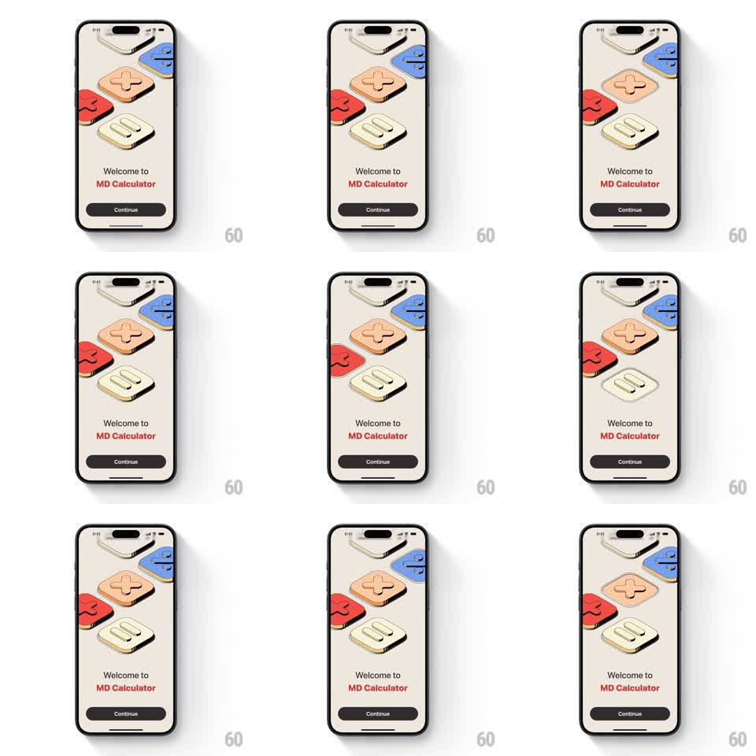

Media
Frame-by-frame

Rebuild this animation 1:1: MD Calculator's splash - bold 3D isometric operator keys (divide, plus, minus, equals, multiply) drift and tilt gently on a cream backdrop above "Welcome to MD Calculator" and a Continue button.

Rebuild this animation 1:1: MD Calculator's splash - bold 3D isometric operator keys (divide, plus, minus, equals, multiply) drift and tilt gently on a cream backdrop above "Welcome to MD Calculator" and a Continue button. ## Integration Integration: stack-agnostic spec - springs given as stiffness/damping, timed motions as duration + curve; map every value to your framework and animation library of choice. ## Scene Cream screen: a cluster of five oversized calculator keys rendered as chunky 3D blocks (colored faces - blue, peach, red, cream, white - with darker side faces) floating in a loose isometric arrangement. Below: "Welcome to MD Calculator" (MD Calculator in red) and a dark Continue button. ## Motion spec Pattern: idle floating 3D key cluster. - Each key bobs on its own slow sine loop (translateY ±8px, 3-4.5s, phase-offset per key). - Keys rock gently around their isometric axis (rotate ±3deg, same loops) so side faces catch light differently. - One key does a periodic "press": dips down 6px and back (400ms, ease-out) every ~3s, like someone tapped it. - Text and button static; Continue pulses its fill subtly (opacity 1 -> 0.9, 2s loop). ## Calibration - The drift must be independent per key - no synchronized bobbing. - Shadows under each key move with the key, not with the background. ## Reduced motion Static key cluster; press animation removed. ## Don't miss - The keys are operator symbols only (÷, +, −, =, ×) - no digits. - Isometric perspective stays fixed; keys tilt on their own axes, the camera never moves.